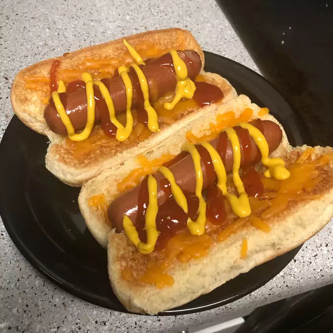

Air Fryer Hot Dogs

Description
A fast meal for when need.
Ingredients
- 4 hot dog buns
- 4 hot dogs
Steps
- Preheat air fryer to 200 degrees C.
-
Place buns in the basket of the air
fryer and cook for 2 minutes. Remove
buns to a plate.
-
Place hot dogs in the basket of the air
fryer and cook for 3 minutes. Transfer
hot dogs to buns.